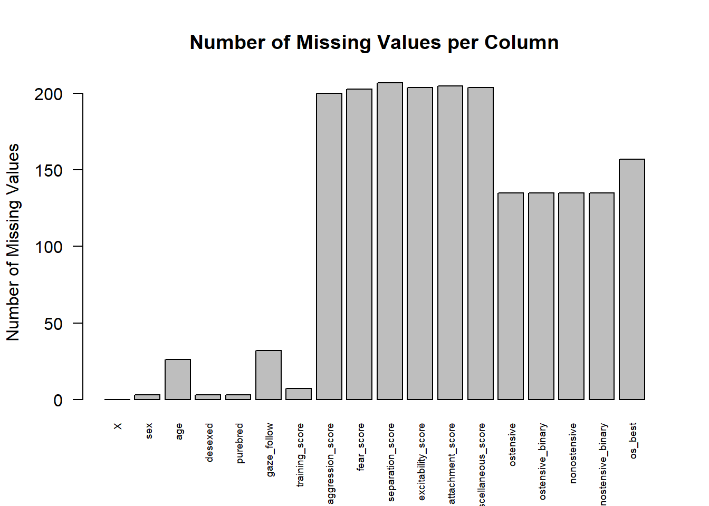
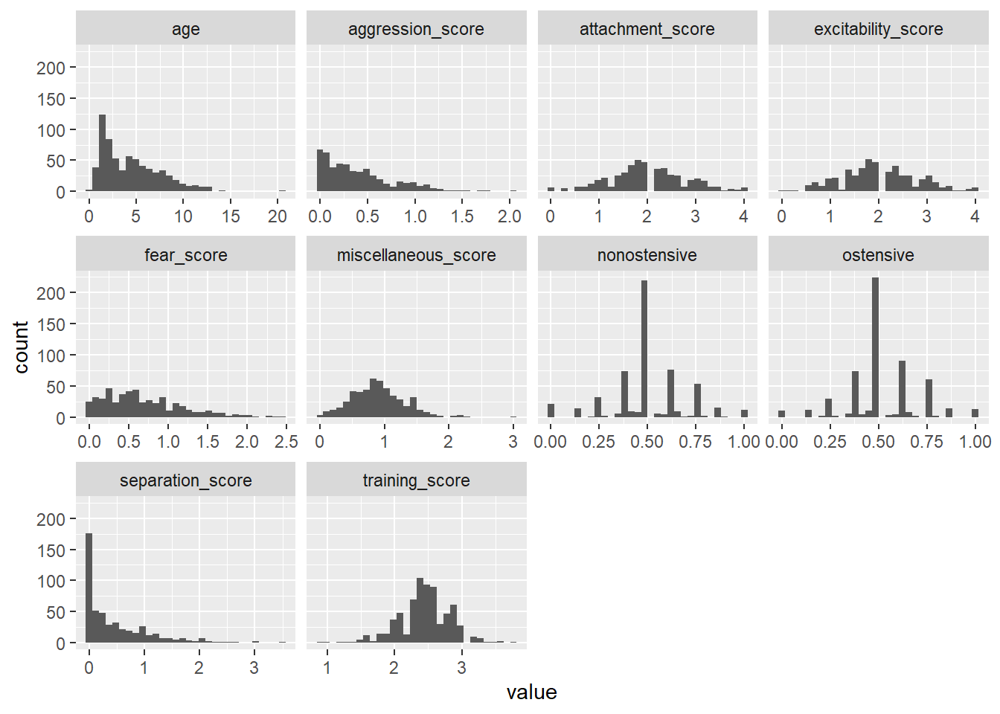

8Two Model Assumptions to Rule Them All: Handling N>P and Missing Data
While all models rely on specific assumptions to find patterns in data, there are two key assumptions that are generally applicable across most models. The first assumption is that the number of observations is greater than the number of predictors. The second assumption is that there is no missing data. Unfortunately, in practicality missing data is almost always present. Therefore, when you have missing data it must be transformed either by removal or imputation (a fancy word for filling in the missing values with a placeholder value like mean, median, or mode). Let’s figure out how to deal with them.
8.0.1 The N>P Problem AKA Dimensionality?
One underlying assumption across all of machine learning is that you have more observations (n) than you have predictors (p), n>p. This problem is also sometimes refereed to as dimensionality. High dimensionality is the same thing as making sure you don’t have n < p. The number of observations must be large than the number of predictors because analytic models do a bad job of parsing out what predictors are important if they don’t have multiple observations per predicting factor. If you have fewer observations than predictors (n<p), your models may still run without error, but the outputs given will often not be meaningful or predictive. These models overfit the training data and are poor at predicting new data.
For most problems in psychology with small datasets (n < 1000), you need to make sure that you have more observations (n) than you have predictors. For instance, in the dataset we are working with today, there are 704 observations and 18 predictors. We know this because our data is tidy so each row is an observation and each column is a predictor, with tidy data all I need to look at to see if n>p is true is whether there are more rows than columns. 704 is larger than 18 (phew!) so we do not need to worry about decreasing the number of predictors to make it satisfy this condition.
However, even some cases where there are more predictors than observations (n < p) can be managed with fancier algorithms and hyperparameters that need more time and computing power - but that is outside the scope of this tutorial. In psychology, researchers using neuroimaging often have to deal with n < p, as the number of voxels or regions of the brain being measured is much more than the number of subjects for which they can collect imaging data. One way of dealing with this is to do feature selection via regularization to reduce the number of possible predictors. There are a few ways to deal with datasets with more predictors than observations.
8.0.2 Missing Data
Unfortunately, missing data is a huge issue for machine learning algorithms. Having a high proportion of missing data (anything greater than 10% in any column) can be detrimental to the predictive accuracy of any model, regardless of whether all other assumptions are met. And some models simply cannot run with any missing data.
Fortunately, there are a number of ways that you can deal with missing data. The simplest (but least desirable) way is to simply not use any observations with missing data. This is the least desired solution because the less data you have, the worse algorithms perform at prediction. Taking out an entire observation because of one missing data point limits the amount of data you have, causing the algorithm to perform worse. Another way of dealing with missing data is to replace missing values by imputing them. Imputing is a fancy word for replacing missing values with other values. One way to replace missing values would be to add 0s to everything that was NA. However, this option can be problematic because it could lead to a model with a ton of bias, or a model showing relationships that are not present because of how a lot of zeros skew the data distributions. Another option of imputing data is to replace the NAs with a value that represents a measure of central tendency. With continuous data, you can replace missing values with the mean or median of the column. For normally distributed data, the mean is most representative and can be used. For data with strong outliers and/or a skewed distribution, the median offers a good option. With categorical data, you can replace missing values with the most frequent number found in the column. Another option (which is outside the scope of this tutorial) is fitting a regression or K nearest neighbors model to the data, and filling in the missing values with the value that these models predict would go in the missing slot. There are good resources for using a KNN model for imputation and a regression model for imputation. The most appropriate imputation method needs to be based on the data set. We are now going to walk through several examples to figure out how to find the best way that fits the data.
To check missing data and transform data accordingly, the first step is to visualize how much missing data you have and where it occurs in your data.
#create vector with how many NAs are in each column in the datasetmissing_frequency_in_manydogs_data <-colSums(is.na(manydogs_feature_selection)) #Create a barplot for the values frequency of missing values in the manydogs datasetmissing_values_barplot <-barplot(missing_frequency_in_manydogs_data,main ="Number of Missing Values per Column",ylab ="Number of Missing Values",las =2,cex.names = .6)

You can see in the above table that we have missing values that need to be dealt with in almost all of our columns. The next step in the missing data process is to summarize our columns. We summarize columns for three reasons. The first is to see what percentage of the column is missing to help us decide when we should remove observations versus when to impute missing values. The second reason is to see the central tendencies of each column. This works in tandem with our third reason, namely, to understand the skew of our columns and begin to do exploratory data analysis.
8.0.2.1 Imputing Continuous Missing Data
To calculate and view the mean, median, min, max, and number of NAs per continuous column, we can use the summary() function. We have 10 columns that are continuous and so we will use the select() function to grab just those 10 columns.
manydogs_summary <- manydogs_feature_selection |>#summarize continuous dataselect(c(age,training_score:ostensive,nonostensive)) |>#grab the 8 columns we neededsummary() #Show me a summary of all the columns that I selectedmanydogs_summary
age training_score aggression_score fear_score
Min. : 0.300 Min. :0.875 Min. :0.00000 Min. :0.0000
1st Qu.: 1.800 1st Qu.:2.250 1st Qu.:0.09416 1st Qu.:0.2778
Median : 3.900 Median :2.500 Median :0.30769 Median :0.5882
Mean : 4.435 Mean :2.451 Mean :0.40090 Mean :0.6763
3rd Qu.: 6.400 3rd Qu.:2.714 3rd Qu.:0.58042 3rd Qu.:0.9444
Max. :20.800 Max. :3.750 Max. :2.03846 Max. :2.4444
NA's :26 NA's :7 NA's :200 NA's :203
separation_score excitability_score attachment_score miscellaneous_score
Min. :0.0000 Min. :0.000 Min. :0.000 Min. :0.0000
1st Qu.:0.0000 1st Qu.:1.500 1st Qu.:1.500 1st Qu.:0.6296
Median :0.2500 Median :2.000 Median :2.000 Median :0.8750
Mean :0.4784 Mean :2.007 Mean :2.012 Mean :0.9040
3rd Qu.:0.7500 3rd Qu.:2.500 3rd Qu.:2.500 3rd Qu.:1.1482
Max. :3.5000 Max. :4.000 Max. :4.000 Max. :3.0000
NA's :207 NA's :204 NA's :205 NA's :204
ostensive nonostensive
Min. :0.0000 Min. :0.000
1st Qu.:0.4444 1st Qu.:0.375
Median :0.5000 Median :0.500
Mean :0.5213 Mean :0.504
3rd Qu.:0.6250 3rd Qu.:0.625
Max. :1.0000 Max. :1.000
NA's :135 NA's :135
Now that we have the number of missing values per column, we will find the percentage of missing values per column to see if any of the columns are more than 10% missing values.
# Grab just the continuous predictorsmanydogs_missing <- manydogs_feature_selection |>select(c(age,training_score:ostensive,nonostensive))# Calculate the percentage of missing values for each columnmissing_percent <-colMeans(is.na(manydogs_missing)) *100# Print the missing summarymissing_percent
All but the first two columns (age and training score) had a missing value percentage of more than 10%, so it is best NOT to simply delete the missing values as that would be a large portion of our data and would negatively impact model performance. If none of the variables (columns) have more than 10% missing data, we could get away with pairwise deletion for those few missing values. Instead, we will impute the data, and in this case we use central tendency values to replace NAs. To help us decide if we should replace continuous missing values with the column mean or median, we need to look at a histogram to investigate if there is strong skew or outliers that could pull the mean too far in one direction. We will do this using ggplot()
# Subset the dataframe to include only the specified columnssubset_data <- manydogs_feature_selection |>select("age", "training_score", "aggression_score", "fear_score", "separation_score", "excitability_score", "attachment_score", "miscellaneous_score", "ostensive", "nonostensive")# Convert the data to long format, specifying the variable columnsubset_data_long <-pivot_longer(subset_data, cols =everything(), names_to ="variable", values_to ="value", names_transform =list(variable = as.character))# Create histograms using facet_wrapggplot(subset_data_long, aes(x = value)) +geom_histogram() +facet_wrap(~ variable, scales ="free_x")

Plots for training_score, attachment_score, excitability_score, miscellaneous_score, nonostensive, and ostensive are normally distributed with few strong outliers so we will replace missing values with the mean of each column. All other plots are skewed and/or have strong outliers, so we will replace these missing values with the median of the column.
#create a data frame that replaces missing data with the column mean or median calculated above in summary tablesmanydogs_missing_cont <- manydogs_feature_selection |>mutate(age=replace_na(age, median(age, na.rm=TRUE)), #change NAs in the age column to the median of the age columntraining_score=replace_na(training_score, mean(training_score, na.rm=TRUE)), #change NAs in the training column to the mean of the columnaggression_score=replace_na(aggression_score, median(aggression_score, na.rm=TRUE)),#change NAs in aggression column to median of the columnfear_score=replace_na(fear_score, median(fear_score, na.rm=TRUE)), #change NAs in fear column to median of the columnseparation_score=replace_na(separation_score, median(separation_score, na.rm=TRUE)), #change NAs in separation column to the median of the columnexcitability_score=replace_na(excitability_score, mean(excitability_score, na.rm=TRUE)), #change NAs in excitability column to mean of the columnattachment_score=replace_na(attachment_score, mean(attachment_score, na.rm=TRUE)),#change NAs in attachment column to mean of the columnmiscellaneous_score=replace_na(miscellaneous_score, mean(miscellaneous_score, na.rm=TRUE)), #change NAs in miscellaneous column to mean of the columnostensive=replace_na(ostensive, mean(ostensive, na.rm =TRUE)),nonostensive=replace_na(nonostensive, mean(nonostensive, na.rm =TRUE)))
8.0.2.2 Imputing categorical missing data
Now we have to summarize the categorical columns to assess what frequencies to add in place of the missing data. To get the mode of each column we will make our own function called get_mode(). We will then apply this function within summarise(). We have 7 columns that are categorical, so we need to find the mode for each of these columns.
#create a function that finds the mode of a columnget_mode <-function(x) { uniq_x <-unique(x) uniq_x[which.max(tabulate(match(x, uniq_x)))]}#Selects the columns we are interested in and finds the modemanydogs_feature_selection |>select(sex, desexed, purebred, gaze_follow, ostensive_binary, nonostensive_binary, os_best) |>summarise(across(everything(), get_mode))
Now we will replace NAs with the category with the highest frequency in each column (the mode).
# add highest frequency per column to missing data in the data framemanydogs_missing_handled <- manydogs_missing_cont |>mutate(sex =replace_na(sex, 1), #change the NAs in the sex column to 1desexed =replace_na(desexed, 1),purebred =replace_na(purebred, 1),gaze_follow =replace_na(gaze_follow, 3),ostensive_binary =replace_na(ostensive_binary, 0),nonostensive_binary =replace_na(nonostensive_binary, 0),os_best =replace_na(os_best, 0))
Now if you check how many missing values are in each column you will see that it is 0 for each column!
missing_frequency_after_missing_handled <-colSums(is.na(manydogs_missing_handled)) #Add together any time that a column has an NAmissing_frequency_after_missing_handled